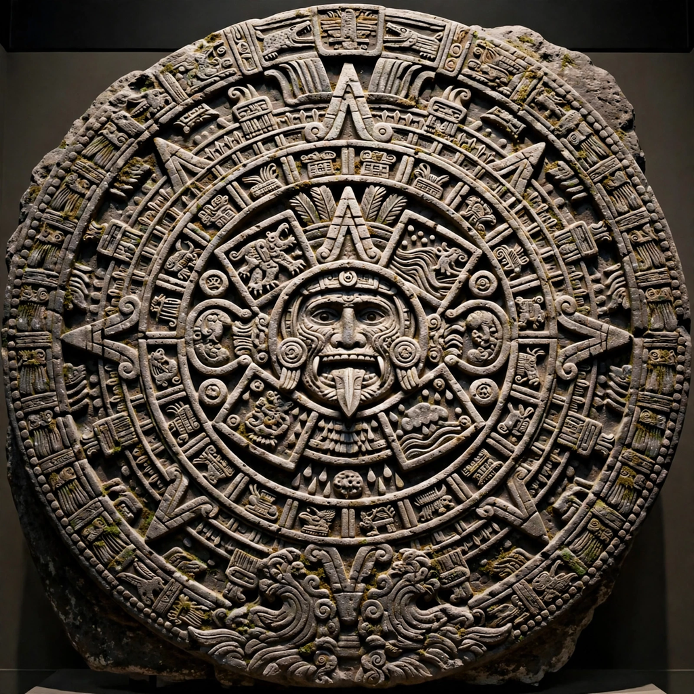

Aztec mythology
From Wikipedia, the free encyclopedia

Aztec mythology is the body of myths and religious beliefs of the Aztec (Mexica) civilisation of central Mexico, recorded in codices and by Spanish chroniclers after the conquest. It centred on a succession of world ages ('suns'), a pantheon headed by Huitzilopochtli, Tezcatlipoca, Quetzalcoatl and Tlaloc, and a cosmology in which human sacrifice sustained the sun and delayed the end of the world.
Cosmology: the Five Suns
Aztec myth held that four previous worlds had been created and destroyed — by jaguars, wind, fire-rain and water — and that the present Fifth Sun, created at Teotihuacan when the humble god Nanahuatzin leapt into the fire, would end in earthquakes. The gods' own self-sacrifice (Quetzalcoatl descending to the underworld, Mictlan, to retrieve humanity's bones and revive them with his blood) obliged humans to repay the debt with offerings, including blood.
Pantheon and ritual
Huitzilopochtli, the tribal god of the Mexica — hummingbird of the south, god of war and sun — demanded nourishment for his daily battle against darkness; his great temple, the Templo Mayor in Tenochtitlan, shared its summit with rain god Tlaloc's shrine. The ritual calendar (the 52-year Aztec calendar cycle) culminated in the New Fire ceremony, when all fires were extinguished and relit on a hilltop amid dread that the sun might not return.
Sources and legacy
Much was destroyed in the conquest, but friars like Bernardino de Sahagún compiled the bilingual Florentine Codex with Nahua elders, preserving hymns, myths and daily life. Aztec mythology permeates modern Mexican identity (the flag's eagle-on-cactus from the Tenochtitlan foundation myth) and art, and its calendar stone is Mexico's most famous archaeological icon.